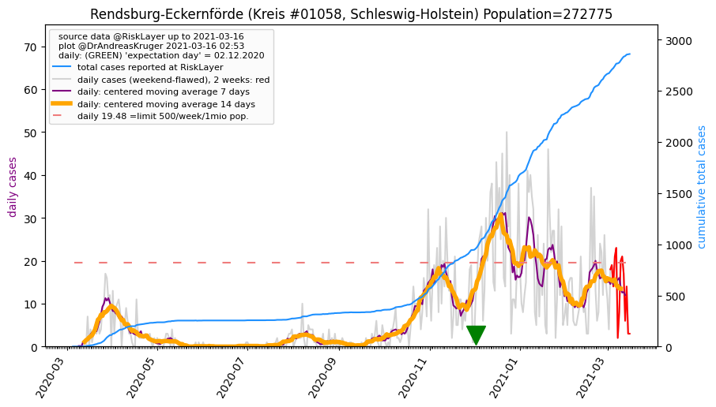
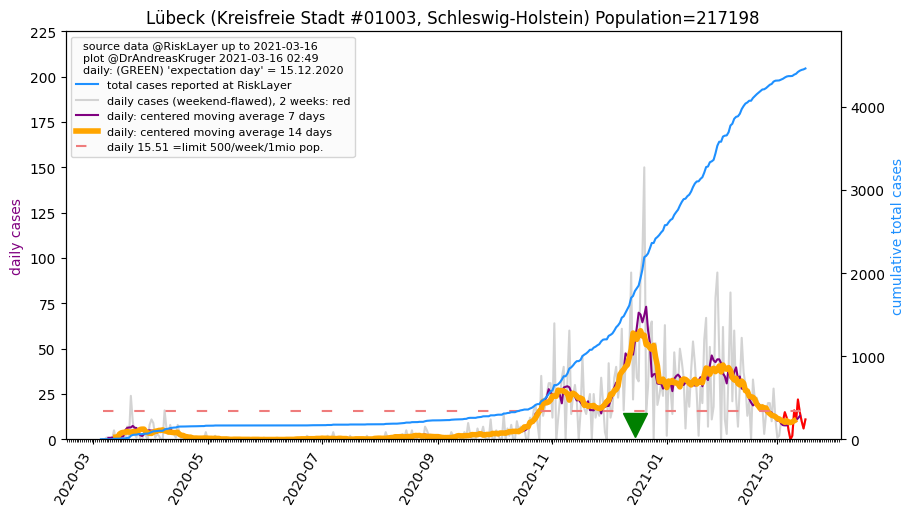
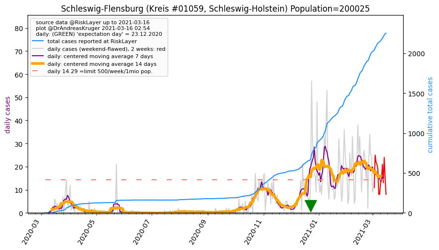

Up to about.html or to overview of Germany
Or down to Kreise (districts)
 Schleswig-Holstein, and its 15 districts (05.05.2020)
Schleswig-Holstein, and its 15 districts (05.05.2020)
 population: 2,896,712 --> current prevalence: 968 known infected per 1 million population
population: 2,896,712 --> current prevalence: 968 known infected per 1 million population
total cases: [5, 7, 8, 9, 10, 12, 15, 29, 35, 48, 74, 111, 137, 151, 235, 276, 359, 405, 454, 503, 593, 655, 754, 864, 953, 1021, 1090, 1216, 1321, 1415, 1540, 1610, 1678, 1716, 1825, 1933, 2002, 2081, 2104, 2139, 2210, 2270, 2281, 2367, 2384, 2419, 2438, 2454, 2493, 2515, 2578, 2607, 2625, 2642, 2654, 2675, 2699, 2719, 2735, 2743, 2800, 2806]
Schleswig-Holstein's 15 Kreise
Sorted by 'center day'
Click on name of Kreis to see detailed data.
Click on column header name, to sort by that column; click again for other direction.
| 05.03.2020 | 06.03.2020 | 07.03.2020 | 08.03.2020 | 09.03.2020 | 10.03.2020 | 11.03.2020 | 12.03.2020 | 13.03.2020 | 14.03.2020 | 15.03.2020 | 16.03.2020 | 17.03.2020 | 18.03.2020 | 19.03.2020 | 20.03.2020 | 21.03.2020 | 22.03.2020 | 23.03.2020 | 24.03.2020 | 25.03.2020 | 26.03.2020 | 27.03.2020 | 28.03.2020 | 29.03.2020 | 30.03.2020 | 31.03.2020 | 01.04.2020 | 02.04.2020 | 03.04.2020 | 04.04.2020 | 05.04.2020 | 06.04.2020 | 07.04.2020 | 08.04.2020 | 09.04.2020 | 10.04.2020 | 11.04.2020 | 12.04.2020 | 13.04.2020 | 14.04.2020 | 15.04.2020 | 16.04.2020 | 17.04.2020 | 18.04.2020 | 19.04.2020 | 20.04.2020 | 21.04.2020 | 22.04.2020 | 23.04.2020 | 24.04.2020 | 25.04.2020 | 26.04.2020 | 27.04.2020 | 28.04.2020 | 29.04.2020 | 30.04.2020 | 01.05.2020 | 02.05.2020 | 03.05.2020 | 04.05.2020 | 05.05.2020 | 14days new cases | Kreis | Prev. p.1mio | 14days Incid.p.1mio | Population | center day | Reff_4_7 | Bundesland | info |
|---|
| 0 | 0 | 0 | 0 | 0 | 0 | 0 | 0 | 0 | 2 | 2 | 4 | 4 | 4 | 4 | 8 | 8 | 13 | 13 | 13 | 20 | 21 | 23 | 28 | 36 | 36 | 36 | 40 | 43 | 51 | 53 | 53 | 53 | 62 | 62 | 66 | 70 | 72 | 74 | 74 | 74 | 74 | 73 | 76 | 76 | 77 | 77 | 79 | 79 | 79 | 83 | 83 | 82 | 82 | 82 | 82 | 82 | 82 | 84 | 84 | 132 | 132 | 53 | Steinburg_KR | 1004 | 403 | 131,347 | 40.0 | nan | Schleswig-Holstein | |
| 0 | 0 | 0 | 0 | 0 | 0 | 0 | 0 | 0 | 0 | 0 | 0 | 1 | 1 | 3 | 3 | 7 | 7 | 7 | 10 | 11 | 12 | 13 | 15 | 15 | 15 | 19 | 24 | 25 | 29 | 30 | 30 | 31 | 34 | 34 | 36 | 40 | 42 | 42 | 42 | 42 | 42 | 43 | 46 | 46 | 49 | 50 | 50 | 60 | 60 | 62 | 62 | 62 | 63 | 63 | 66 | 66 | 66 | 66 | 67 | 67 | 68 | 18 | Neumünster_KS | 855 | 226 | 79,487 | 34.9 | 1.25 | Schleswig-Holstein | |
| 1 | 1 | 1 | 1 | 1 | 1 | 1 | 1 | 1 | 1 | 1 | 1 | 8 | 8 | 17 | 21 | 29 | 43 | 52 | 60 | 68 | 79 | 88 | 95 | 113 | 120 | 132 | 147 | 155 | 161 | 175 | 185 | 195 | 199 | 209 | 215 | 222 | 233 | 238 | 238 | 289 | 315 | 316 | 332 | 337 | 348 | 348 | 355 | 360 | 366 | 376 | 383 | 386 | 389 | 390 | 391 | 395 | 397 | 399 | 401 | 401 | 401 | 46 | Stormarn_KR | 1648 | 189 | 243,196 | 33.2 | 0.52 | Schleswig-Holstein | |
| 1 | 1 | 1 | 1 | 2 | 2 | 2 | 3 | 3 | 5 | 5 | 12 | 12 | 13 | 19 | 21 | 24 | 24 | 36 | 39 | 51 | 52 | 56 | 71 | 80 | 80 | 80 | 92 | 112 | 115 | 135 | 147 | 155 | 155 | 162 | 178 | 178 | 183 | 183 | 198 | 198 | 204 | 205 | 222 | 222 | 225 | 235 | 235 | 236 | 237 | 249 | 253 | 255 | 255 | 259 | 260 | 261 | 262 | 262 | 262 | 262 | 262 | 27 | Herzogtum Lauenburg_KR | 1328 | 136 | 197,264 | 31.5 | 0.23 | Schleswig-Holstein | |
| 0 | 0 | 0 | 0 | 0 | 0 | 0 | 6 | 7 | 11 | 12 | 13 | 17 | 18 | 25 | 34 | 36 | 37 | 41 | 51 | 51 | 63 | 66 | 74 | 74 | 100 | 114 | 121 | 124 | 136 | 146 | 157 | 160 | 164 | 169 | 170 | 175 | 187 | 192 | 195 | 195 | 198 | 199 | 217 | 217 | 218 | 221 | 221 | 235 | 240 | 245 | 246 | 248 | 253 | 254 | 257 | 261 | 264 | 265 | 265 | 266 | 266 | 45 | Kiel_KS | 1074 | 181 | 247,548 | 31.2 | 0.63 | Schleswig-Holstein | |
| 1 | 1 | 2 | 2 | 2 | 2 | 4 | 4 | 5 | 5 | 18 | 24 | 24 | 27 | 54 | 60 | 76 | 76 | 88 | 92 | 115 | 122 | 155 | 178 | 178 | 188 | 205 | 233 | 250 | 271 | 304 | 304 | 339 | 339 | 377 | 423 | 445 | 455 | 455 | 455 | 461 | 468 | 468 | 477 | 483 | 491 | 492 | 494 | 502 | 502 | 520 | 526 | 526 | 529 | 534 | 540 | 544 | 551 | 558 | 560 | 565 | 565 | 71 | Pinneberg_KR | 1797 | 225 | 314,391 | 30.7 | 1.00 | Schleswig-Holstein | |
| 1 | 2 | 2 | 2 | 2 | 2 | 2 | 2 | 4 | 4 | 4 | 6 | 7 | 14 | 18 | 19 | 27 | 29 | 30 | 34 | 43 | 48 | 55 | 63 | 72 | 73 | 80 | 93 | 108 | 119 | 133 | 141 | 143 | 151 | 162 | 169 | 172 | 180 | 183 | 184 | 186 | 194 | 198 | 201 | 202 | 205 | 206 | 207 | 207 | 208 | 207 | 212 | 212 | 214 | 214 | 216 | 219 | 222 | 224 | 225 | 226 | 229 | 22 | Segeberg_KR | 829 | 79 | 276,032 | 30.6 | 1.00 | Schleswig-Holstein | |
| 0 | 0 | 0 | 0 | 0 | 2 | 2 | 2 | 2 | 2 | 2 | 6 | 6 | 6 | 8 | 10 | 11 | 12 | 12 | 21 | 23 | 31 | 38 | 45 | 50 | 54 | 54 | 56 | 58 | 64 | 68 | 72 | 73 | 75 | 80 | 89 | 89 | 93 | 94 | 99 | 101 | 101 | 101 | 104 | 104 | 104 | 104 | 104 | 104 | 105 | 110 | 112 | 115 | 115 | 115 | 116 | 118 | 118 | 119 | 119 | 119 | 119 | 15 | Plön_KR | 925 | 116 | 128,647 | 29.8 | 0.50 | Schleswig-Holstein | |
| 0 | 0 | 0 | 0 | 0 | 0 | 0 | 0 | 0 | 1 | 1 | 2 | 2 | 2 | 10 | 10 | 16 | 18 | 19 | 19 | 20 | 22 | 24 | 27 | 36 | 39 | 39 | 40 | 42 | 45 | 48 | 48 | 49 | 51 | 52 | 53 | 59 | 64 | 64 | 65 | 67 | 68 | 67 | 68 | 69 | 71 | 71 | 71 | 71 | 71 | 76 | 77 | 78 | 78 | 78 | 78 | 78 | 79 | 79 | 81 | 81 | 81 | 10 | Nordfriesland_KR | 489 | 60 | 165,507 | 29.6 | 1.00 | Schleswig-Holstein | |
| 0 | 0 | 0 | 0 | 0 | 0 | 1 | 1 | 1 | 1 | 2 | 2 | 4 | 4 | 4 | 7 | 11 | 12 | 13 | 13 | 17 | 18 | 22 | 23 | 23 | 23 | 23 | 32 | 39 | 43 | 47 | 51 | 51 | 52 | 52 | 52 | 53 | 54 | 54 | 54 | 57 | 57 | 57 | 58 | 58 | 59 | 59 | 59 | 59 | 59 | 59 | 60 | 63 | 64 | 64 | 64 | 65 | 66 | 67 | 67 | 67 | 67 | 8 | Ostholstein_KR | 334 | 39 | 200,581 | 29.0 | 0.43 | Schleswig-Holstein | |
| 0 | 0 | 0 | 0 | 0 | 0 | 0 | 1 | 1 | 1 | 8 | 8 | 12 | 13 | 16 | 21 | 24 | 30 | 33 | 37 | 46 | 56 | 73 | 89 | 100 | 112 | 112 | 125 | 128 | 137 | 147 | 158 | 166 | 166 | 172 | 177 | 186 | 192 | 195 | 198 | 199 | 199 | 199 | 210 | 213 | 215 | 217 | 219 | 221 | 224 | 226 | 228 | 231 | 232 | 232 | 234 | 235 | 237 | 237 | 237 | 237 | 237 | 18 | Rendsburg-Eckernförde_KR | 868 | 65 | 272,775 | 28.8 | 0.45 | Schleswig-Holstein | |
| 1 | 1 | 1 | 2 | 2 | 2 | 2 | 7 | 7 | 8 | 9 | 10 | 11 | 11 | 18 | 19 | 43 | 53 | 56 | 57 | 63 | 63 | 63 | 67 | 69 | 69 | 77 | 88 | 97 | 98 | 101 | 103 | 103 | 103 | 119 | 125 | 128 | 136 | 139 | 142 | 143 | 151 | 154 | 154 | 155 | 155 | 156 | 157 | 157 | 157 | 158 | 158 | 159 | 159 | 160 | 160 | 164 | 164 | 164 | 164 | 165 | 167 | 10 | Lübeck_KS | 768 | 46 | 217,198 | 27.7 | 1.17 | Schleswig-Holstein | |
| 0 | 0 | 0 | 0 | 0 | 0 | 0 | 1 | 2 | 5 | 5 | 11 | 16 | 17 | 21 | 22 | 23 | 24 | 27 | 27 | 34 | 34 | 38 | 48 | 62 | 67 | 69 | 75 | 87 | 88 | 91 | 93 | 95 | 95 | 99 | 101 | 104 | 107 | 108 | 111 | 113 | 113 | 115 | 116 | 116 | 116 | 116 | 117 | 116 | 121 | 121 | 121 | 122 | 123 | 123 | 125 | 125 | 125 | 125 | 125 | 126 | 125 | 8 | Schleswig-Flensburg_KR | 624 | 39 | 200,025 | 26.4 | 0.75 | Schleswig-Holstein | |
| 0 | 1 | 1 | 1 | 1 | 1 | 1 | 1 | 1 | 1 | 1 | 6 | 6 | 6 | 10 | 11 | 11 | 12 | 12 | 15 | 15 | 16 | 19 | 20 | 24 | 24 | 28 | 27 | 28 | 33 | 35 | 37 | 37 | 42 | 46 | 49 | 50 | 51 | 51 | 52 | 53 | 54 | 54 | 54 | 54 | 54 | 54 | 54 | 54 | 54 | 54 | 54 | 54 | 54 | 54 | 54 | 54 | 54 | 54 | 54 | 54 | 55 | 1 | Dithmarschen_KR | 412 | 7 | 133,210 | 26.2 | nan | Schleswig-Holstein | |
| 0 | 0 | 0 | 0 | 0 | 0 | 0 | 0 | 1 | 1 | 4 | 6 | 7 | 7 | 8 | 10 | 13 | 15 | 15 | 15 | 16 | 18 | 21 | 21 | 21 | 21 | 22 | 23 | 25 | 25 | 27 | 31 | 28 | 28 | 30 | 30 | 31 | 32 | 32 | 32 | 32 | 32 | 32 | 32 | 32 | 32 | 32 | 32 | 32 | 32 | 32 | 32 | 32 | 32 | 32 | 32 | 32 | 32 | 32 | 32 | 32 | 32 | 0 | Flensburg_KS | 357 | 0 | 89,504 | 20.8 | nan | Schleswig-Holstein | |
Steinburg (Kreis #1061, Schleswig-Holstein) Population=131347 AGS=1061
Neighbours within 50 km: Pinneberg_KR, Neumünster_KS, Dithmarschen_KR, Stade_LK, Segeberg_KR, Rendsburg-Eckernförde_KR
 Kreis Steinburg population: 131,347 --> current prevalence: 1004 known infected per 1 million people.
Kreis Steinburg population: 131,347 --> current prevalence: 1004 known infected per 1 million people.
total cases: [0, 0, 0, 0, 0, 0, 0, 0, 0, 2, 2, 4, 4, 4, 4, 8, 8, 13, 13, 13, 20, 21, 23, 28, 36, 36, 36, 40, 43, 51, 53, 53, 53, 62, 62, 66, 70, 72, 74, 74, 74, 74, 73, 76, 76, 77, 77, 79, 79, 79, 83, 83, 82, 82, 82, 82, 82, 82, 84, 84, 132, 132]
Back to top or: Up to about.html
Neumünster (Kreisfreie Stadt #1004, Schleswig-Holstein) Population=79487 AGS=1004
Neighbours within 50 km: Segeberg_KR, Rendsburg-Eckernförde_KR, Kiel_KS, Plön_KR, Steinburg_KR, Pinneberg_KR, Stormarn_KR
 Kreisfreie Stadt Neumünster population: 79,487 --> current prevalence: 855 known infected per 1 million people.
Kreisfreie Stadt Neumünster population: 79,487 --> current prevalence: 855 known infected per 1 million people.
total cases: [0, 0, 0, 0, 0, 0, 0, 0, 0, 0, 0, 0, 1, 1, 3, 3, 7, 7, 7, 10, 11, 12, 13, 15, 15, 15, 19, 24, 25, 29, 30, 30, 31, 34, 34, 36, 40, 42, 42, 42, 42, 42, 43, 46, 46, 49, 50, 50, 60, 60, 62, 62, 62, 63, 63, 66, 66, 66, 66, 67, 67, 68]
Back to top or: Up to about.html
Stormarn (Kreis #1062, Schleswig-Holstein) Population=243196 AGS=1062
Neighbours within 50 km: Herzogtum Lauenburg_KR, Segeberg_KR, Hamburg_KS, Lübeck_KS, Pinneberg_KR, Neumünster_KS
 Kreis Stormarn population: 243,196 --> current prevalence: 1648 known infected per 1 million people.
Kreis Stormarn population: 243,196 --> current prevalence: 1648 known infected per 1 million people.
total cases: [1, 1, 1, 1, 1, 1, 1, 1, 1, 1, 1, 1, 8, 8, 17, 21, 29, 43, 52, 60, 68, 79, 88, 95, 113, 120, 132, 147, 155, 161, 175, 185, 195, 199, 209, 215, 222, 233, 238, 238, 289, 315, 316, 332, 337, 348, 348, 355, 360, 366, 376, 383, 386, 389, 390, 391, 395, 397, 399, 401, 401, 401]
Back to top or: Up to about.html
Herzogtum Lauenburg (Kreis #1053, Schleswig-Holstein) Population=197264 AGS=1053
Neighbours within 50 km: Stormarn_KR, Lübeck_KS, Hamburg_KS, Lüneburg_LK, Segeberg_KR
 Kreis Herzogtum Lauenburg population: 197,264 --> current prevalence: 1328 known infected per 1 million people.
Kreis Herzogtum Lauenburg population: 197,264 --> current prevalence: 1328 known infected per 1 million people.
total cases: [1, 1, 1, 1, 2, 2, 2, 3, 3, 5, 5, 12, 12, 13, 19, 21, 24, 24, 36, 39, 51, 52, 56, 71, 80, 80, 80, 92, 112, 115, 135, 147, 155, 155, 162, 178, 178, 183, 183, 198, 198, 204, 205, 222, 222, 225, 235, 235, 236, 237, 249, 253, 255, 255, 259, 260, 261, 262, 262, 262, 262, 262]
Back to top or: Up to about.html
Kiel (Kreisfreie Stadt #1002, Schleswig-Holstein) Population=247548 AGS=1002
Neighbours within 50 km: Plön_KR, Rendsburg-Eckernförde_KR, Neumünster_KS, Segeberg_KR, Ostholstein_KR
 Kreisfreie Stadt Kiel population: 247,548 --> current prevalence: 1074 known infected per 1 million people.
Kreisfreie Stadt Kiel population: 247,548 --> current prevalence: 1074 known infected per 1 million people.
total cases: [0, 0, 0, 0, 0, 0, 0, 6, 7, 11, 12, 13, 17, 18, 25, 34, 36, 37, 41, 51, 51, 63, 66, 74, 74, 100, 114, 121, 124, 136, 146, 157, 160, 164, 169, 170, 175, 187, 192, 195, 195, 198, 199, 217, 217, 218, 221, 221, 235, 240, 245, 246, 248, 253, 254, 257, 261, 264, 265, 265, 266, 266]
Back to top or: Up to about.html
Pinneberg (Kreis #1056, Schleswig-Holstein) Population=314391 AGS=1056
Neighbours within 50 km: Stade_LK, Hamburg_KS, Steinburg_KR, Segeberg_KR, Stormarn_KR, Neumünster_KS, Harburg_LK
 Kreis Pinneberg population: 314,391 --> current prevalence: 1797 known infected per 1 million people.
Kreis Pinneberg population: 314,391 --> current prevalence: 1797 known infected per 1 million people.
total cases: [1, 1, 2, 2, 2, 2, 4, 4, 5, 5, 18, 24, 24, 27, 54, 60, 76, 76, 88, 92, 115, 122, 155, 178, 178, 188, 205, 233, 250, 271, 304, 304, 339, 339, 377, 423, 445, 455, 455, 455, 461, 468, 468, 477, 483, 491, 492, 494, 502, 502, 520, 526, 526, 529, 534, 540, 544, 551, 558, 560, 565, 565]
Back to top or: Up to about.html
Segeberg (Kreis #1060, Schleswig-Holstein) Population=276032 AGS=1060
Neighbours within 50 km: Neumünster_KS, Stormarn_KR, Pinneberg_KR, Plön_KR, Lübeck_KS, Steinburg_KR, Hamburg_KS, Kiel_KS, Rendsburg-Eckernförde_KR, Herzogtum Lauenburg_KR
 Kreis Segeberg population: 276,032 --> current prevalence: 829 known infected per 1 million people.
Kreis Segeberg population: 276,032 --> current prevalence: 829 known infected per 1 million people.
total cases: [1, 2, 2, 2, 2, 2, 2, 2, 4, 4, 4, 6, 7, 14, 18, 19, 27, 29, 30, 34, 43, 48, 55, 63, 72, 73, 80, 93, 108, 119, 133, 141, 143, 151, 162, 169, 172, 180, 183, 184, 186, 194, 198, 201, 202, 205, 206, 207, 207, 208, 207, 212, 212, 214, 214, 216, 219, 222, 224, 225, 226, 229]
Back to top or: Up to about.html
Plön (Kreis #1057, Schleswig-Holstein) Population=128647 AGS=1057
Neighbours within 50 km: Kiel_KS, Ostholstein_KR, Neumünster_KS, Rendsburg-Eckernförde_KR, Segeberg_KR, Lübeck_KS
 Kreis Plön population: 128,647 --> current prevalence: 925 known infected per 1 million people.
Kreis Plön population: 128,647 --> current prevalence: 925 known infected per 1 million people.
total cases: [0, 0, 0, 0, 0, 2, 2, 2, 2, 2, 2, 6, 6, 6, 8, 10, 11, 12, 12, 21, 23, 31, 38, 45, 50, 54, 54, 56, 58, 64, 68, 72, 73, 75, 80, 89, 89, 93, 94, 99, 101, 101, 101, 104, 104, 104, 104, 104, 104, 105, 110, 112, 115, 115, 115, 116, 118, 118, 119, 119, 119, 119]
Back to top or: Up to about.html
Nordfriesland (Kreis #1054, Schleswig-Holstein) Population=165507 AGS=1054
Neighbours within 50 km: Schleswig-Flensburg_KR, Flensburg_KS
 Kreis Nordfriesland population: 165,507 --> current prevalence: 489 known infected per 1 million people.
Kreis Nordfriesland population: 165,507 --> current prevalence: 489 known infected per 1 million people.
total cases: [0, 0, 0, 0, 0, 0, 0, 0, 0, 1, 1, 2, 2, 2, 10, 10, 16, 18, 19, 19, 20, 22, 24, 27, 36, 39, 39, 40, 42, 45, 48, 48, 49, 51, 52, 53, 59, 64, 64, 65, 67, 68, 67, 68, 69, 71, 71, 71, 71, 71, 76, 77, 78, 78, 78, 78, 78, 79, 79, 81, 81, 81]
Back to top or: Up to about.html
Ostholstein (Kreis #1055, Schleswig-Holstein) Population=200581 AGS=1055
Neighbours within 50 km: Plön_KR, Lübeck_KS, Kiel_KS, Nordwestmecklenburg_LK
 Kreis Ostholstein population: 200,581 --> current prevalence: 334 known infected per 1 million people.
Kreis Ostholstein population: 200,581 --> current prevalence: 334 known infected per 1 million people.
total cases: [0, 0, 0, 0, 0, 0, 1, 1, 1, 1, 2, 2, 4, 4, 4, 7, 11, 12, 13, 13, 17, 18, 22, 23, 23, 23, 23, 32, 39, 43, 47, 51, 51, 52, 52, 52, 53, 54, 54, 54, 57, 57, 57, 58, 58, 59, 59, 59, 59, 59, 59, 60, 63, 64, 64, 64, 65, 66, 67, 67, 67, 67]
Back to top or: Up to about.html
Rendsburg-Eckernförde (Kreis #1058, Schleswig-Holstein) Population=272775 AGS=1058
Neighbours within 50 km: Kiel_KS, Neumünster_KS, Plön_KR, Schleswig-Flensburg_KR, Steinburg_KR, Dithmarschen_KR, Segeberg_KR
Kreis Rendsburg-Eckernförde population: 272,775 --> current prevalence: 868 known infected per 1 million people.
total cases: [0, 0, 0, 0, 0, 0, 0, 1, 1, 1, 8, 8, 12, 13, 16, 21, 24, 30, 33, 37, 46, 56, 73, 89, 100, 112, 112, 125, 128, 137, 147, 158, 166, 166, 172, 177, 186, 192, 195, 198, 199, 199, 199, 210, 213, 215, 217, 219, 221, 224, 226, 228, 231, 232, 232, 234, 235, 237, 237, 237, 237, 237]
Back to top or: Up to about.html
Lübeck (Kreisfreie Stadt #1003, Schleswig-Holstein) Population=217198 AGS=1003
Neighbours within 50 km: Stormarn_KR, Herzogtum Lauenburg_KR, Nordwestmecklenburg_LK, Ostholstein_KR, Segeberg_KR, Plön_KR
Kreisfreie Stadt Lübeck population: 217,198 --> current prevalence: 768 known infected per 1 million people.
total cases: [1, 1, 1, 2, 2, 2, 2, 7, 7, 8, 9, 10, 11, 11, 18, 19, 43, 53, 56, 57, 63, 63, 63, 67, 69, 69, 77, 88, 97, 98, 101, 103, 103, 103, 119, 125, 128, 136, 139, 142, 143, 151, 154, 154, 155, 155, 156, 157, 157, 157, 158, 158, 159, 159, 160, 160, 164, 164, 164, 164, 165, 167]
Back to top or: Up to about.html
Schleswig-Flensburg (Kreis #1059, Schleswig-Holstein) Population=200025 AGS=1059
Neighbours within 50 km: Flensburg_KS, Nordfriesland_KR, Rendsburg-Eckernförde_KR
Kreis Schleswig-Flensburg population: 200,025 --> current prevalence: 624 known infected per 1 million people.
total cases: [0, 0, 0, 0, 0, 0, 0, 1, 2, 5, 5, 11, 16, 17, 21, 22, 23, 24, 27, 27, 34, 34, 38, 48, 62, 67, 69, 75, 87, 88, 91, 93, 95, 95, 99, 101, 104, 107, 108, 111, 113, 113, 115, 116, 116, 116, 116, 117, 116, 121, 121, 121, 122, 123, 123, 125, 125, 125, 125, 125, 126, 125]
Back to top or: Up to about.html
Dithmarschen (Kreis #1051, Schleswig-Holstein) Population=133210 AGS=1051
Neighbours within 50 km: Steinburg_KR, Rendsburg-Eckernförde_KR
 Kreis Dithmarschen population: 133,210 --> current prevalence: 412 known infected per 1 million people.
Kreis Dithmarschen population: 133,210 --> current prevalence: 412 known infected per 1 million people.
total cases: [0, 1, 1, 1, 1, 1, 1, 1, 1, 1, 1, 6, 6, 6, 10, 11, 11, 12, 12, 15, 15, 16, 19, 20, 24, 24, 28, 27, 28, 33, 35, 37, 37, 42, 46, 49, 50, 51, 51, 52, 53, 54, 54, 54, 54, 54, 54, 54, 54, 54, 54, 54, 54, 54, 54, 54, 54, 54, 54, 54, 54, 55]
Back to top or: Up to about.html
Flensburg (Kreisfreie Stadt #1001, Schleswig-Holstein) Population=89504 AGS=1001
Neighbours within 50 km: Schleswig-Flensburg_KR, Nordfriesland_KR
 Kreisfreie Stadt Flensburg population: 89,504 --> current prevalence: 357 known infected per 1 million people.
Kreisfreie Stadt Flensburg population: 89,504 --> current prevalence: 357 known infected per 1 million people.
total cases: [0, 0, 0, 0, 0, 0, 0, 0, 1, 1, 4, 6, 7, 7, 8, 10, 13, 15, 15, 15, 16, 18, 21, 21, 21, 21, 22, 23, 25, 25, 27, 31, 28, 28, 30, 30, 31, 32, 32, 32, 32, 32, 32, 32, 32, 32, 32, 32, 32, 32, 32, 32, 32, 32, 32, 32, 32, 32, 32, 32, 32, 32]
Back to top or: Up to about.html
tiny.cc/cov19de page generated 2020-05-05 13:45:22.